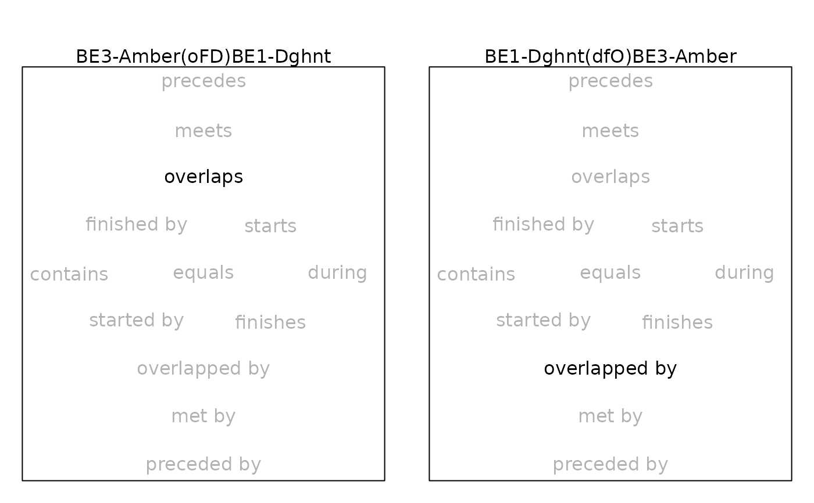

Observed Frequency of an Allen Set
Source:R/AllGenerics.R, R/allen-mcmc.R
allen_observe_frequency.RdCreates a matrix of observed frequencies of a given Allen set among two or more groups of chains from the MCMC output of a Bayesian calibration.
Usage
allen_observe_frequency(x, groups, ...)
# S4 method for class 'PhasesMCMC,missing'
allen_observe_frequency(x, set)
# S4 method for class 'EventsMCMC,list'
allen_observe_frequency(x, groups, ...)Arguments
- x
An
EventsMCMCor aPhasesMCMCobject containing the output of the MCMC algorithm.- groups
A
listof (named) vector of names or indexes of columns inx(seephases()).- ...
Currently not used.
- set
A
characterstring representation of an Allen set.
Value
A square matrix of observed frequencies.
See also
Other Allen's intervals:
allen_analyze(),
allen_analyze_relations(),
allen_complement(),
allen_composition(),
allen_converse(),
allen_illustrate(),
allen_illustrate_relations(),
allen_intersect(),
allen_joint_concurrency(),
allen_observe(),
allen_plot(),
allen_relation(),
allen_relation_code(),
allen_union()
Examples
if (requireNamespace("ArchaeoData", quietly = TRUE)) {
## Load the Anglo Saxon burials dataset
path <- system.file("oxcal/burials.csv", package = "ArchaeoData")
burials <- read.table(path, header = TRUE, sep = ",", dec = ".",
check.names = FALSE)
## Coerce to event
burials <- as_events(burials, calendar = CE())
## Dates associated with bead BE3 Amber
be3_amber <- c(
"UB-4836 (WG27)", "UB-5208 (ApD107)", "UB-4965 (ApD117)",
"UB-4735 (Ber022)", "UB-4739 (Ber134/1)", "UB-4728 (MH064)",
"UB-4729 (MH068)", "UB-4732 (MH094)", "UB-4733 (MH095)",
"UB-4734 (MH105c)", "UB-4984 (Lec018)", "UB-4709 (EH014)",
"UB-4707 (EH079)", "UB-4708 (EH083)", "UB-6033 (WHes113)",
"UB-4706 (WHes118)", "UB-4705 (WHes123)", "UB-6040 (CasD053)",
"UB-6037 (CasD134)", "UB-6472 (BuD222)", "UB-6473 (BuD250)",
"UB-6476 (BuD339)", "UB-4963 (SPTip208)", "UB-4890 (MelSG075)",
"UB-4887 (MelSG082)", "UB-4888 (MelSG089)", "MaDE1 & E2",
"UB-4552 (MaDE3)", "UB-4975 (AstCli12)", "UB-4835 (ApD134)",
"SUERC-39108 ERLK G322", "SUERC-39109 ERL G362", "SUERC-39112 ERL G405",
"SUERC-51560 ERL G038", "SUERC-39091 (ERL G003)", "SUERC-39092 (ERL G005)",
"SUERC-39113 (ERL G417)", "SUERC-51549 (ERL G195)", "SUERC-51552 (ERL G107)",
"SUERC-51550 (ERL G254)"
)
## Dates associated with bead BE1 Dghnt
be1_dghnt <- c(
"UB-4503 (Lec148)", "UB-4506 (Lec172/2)", "UB-6038 (CasD183)",
"UB-4512 (EH091)", "UB-4501 (Lec014)", "UB-4507 (Lec187)",
"UB-4502 (Lec138)", "UB-4042 (But1674)", "SUERC-39100 (ERL G266)"
)
## Construct a list of lists
chains <- list(
list("BE3-Amber" = be3_amber, "BE1-Dghnt" = be1_dghnt),
list("BE1-Dghnt" = be1_dghnt, "BE3-Amber" = be3_amber)
)
## Plot
allen_observe(x = burials, groups = chains)
## Observe 2x2 frequency matrix of the relation of trunk to branch
allen_observe_frequency(burials, groups = chains, set = "oFD")
}

#> BE3-Amber BE1-Dghnt
#> BE3-Amber NA 1
#> BE1-Dghnt 0 NA